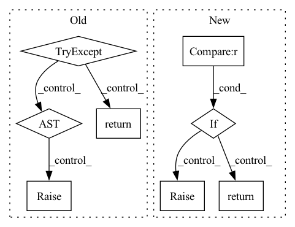

Pattern ID :9239
Before Change
:param port_expose: port expose for container flow
:param kwargs: keyword args
:return: response from mini-jinad
try:
r = requests.post(
url=f"{self.host}/{self._kind}",
params={"port_expose": port_expose},
json=self.params,
)
if r.status_code != requests.codes.created:
raise Runtime400Exception(
f"{self._kind.title()} creation failed \n{"".join(r.json()["body"])}"
)
return r.json()
except requests.exceptions.RequestException as ex:
self._logger.error(f"{ex!r}")
raise Runtime400Exception(
f"{self._kind.title()} creation failed: {r.json()}"
)
After Change
json=params,
) as response:
response_json = await response.json()
if response.status != HTTPStatus.CREATED :
raise Runtime400Exception(
f"{self._kind.title()} creation failed: {response_json}"
)
return response_json
@raise_if_not_alive
async def _update(self, uri: str, params: Dict, **kwargs) -> Dict:In pattern: SUPERPATTERN
Frequency: 3
Non-data size: 8
Instances Fragment ID: 33319452
Project Name: jina-ai/jina
Commit Name: 5082c49ebcf70b070f96682b7e1766c17822253b
Time: 2021-07-15
Author: deepankar.mahapatro@jina.ai
File Name: daemon/stores/flows.py
M Class Name: FlowStore
N Class Name: FlowStore
M Method Name: _add(4)
N Method Name: _add(2)
M Parent Class: ContainerStore
N Parent Class: ContainerStore
M File Name: daemon/stores/flows.py
N File Name: daemon/stores/flows.py
M Start Line: 24
M End Line: 41
N Start Line: 17
N End Line: 40
Before Change
"zenml.post_execution.pipeline_run.PipelineRunView.get_step",
),
)
try:
return self._steps[step_name]
except KeyError:
raise KeyError(
f"No step found for name `{step_name}`. This pipeline "
f"run only has steps with the following "
f"names: `{self.get_step_names()}`"After Change
step = step_name
// Raise an error if there is no such step in the given pipeline run.
if step not in self._steps :
raise KeyError(
f"No step found for name `{step}`. This pipeline "
f"run only has steps with the following "
f"names: `{self.get_step_names()}`"
)
return self._steps[step]
def _ensure_steps_fetched(self) -> None:
Fetches all steps for this pipeline run from the metadata store. Fragment ID: 33319453
Project Name: maiot-io/zenml
Commit Name: 771bddac97bf99e5a1c9bad3b0227a187c592c51
Time: 2022-08-02
Author: felix@zenml.io
File Name: src/zenml/post_execution/pipeline_run.py
M Class Name: PipelineRunView
N Class Name: PipelineRunView
M Method Name: get_step(2)
N Method Name: get_step(2)
M Parent Class:
N Parent Class:
M File Name: src/zenml/post_execution/pipeline_run.py
N File Name: src/zenml/post_execution/pipeline_run.py
M Start Line: 163
M End Line: 236
N Start Line: 161
N End Line: 224
Before Change
_kind = "pea"
def _add(self):
try:
self._logger.debug(
f"sending POST request to mini-jinad on {self.host}/{self._kind}"
)
r = requests.post(url=f"{self.host}/{self._kind}", json=self.params)
if r.status_code != requests.codes.created:
raise Runtime400Exception(
f"{self._kind.title()} creation failed: {r.json()}"
)
return r.json()
except requests.exceptions.RequestException as ex:
self._logger.error(f"{ex!r}")
raise Runtime400Exception(
f"{self._kind.title()} deletion failed. request timed out"
)
After Change
method="POST", url=f"{uri}/{self._kind}", json=params
) as response:
response_json = await response.json()
if response.status != HTTPStatus.CREATED :
raise Runtime400Exception(
f"{self._kind.title()} creation failed: {response_json}"
)
return response_json
async def _update(self, uri, **kwargs):
// TODO Fragment ID: 33319454
Project Name: jina-ai/jina
Commit Name: 5082c49ebcf70b070f96682b7e1766c17822253b
Time: 2021-07-15
Author: deepankar.mahapatro@jina.ai
File Name: daemon/stores/peas.py
M Class Name: PeaStore
N Class Name: PeaStore
M Method Name: _add(3)
N Method Name: _add(1)
M Parent Class: ContainerStore
N Parent Class: ContainerStore
M File Name: daemon/stores/peas.py
N File Name: daemon/stores/peas.py
M Start Line: 12
M End Line: 29
N Start Line: 17
N End Line: 37